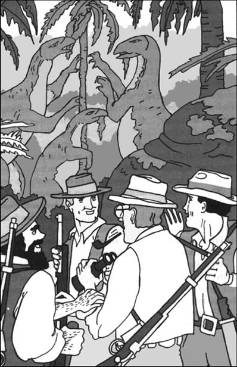

6
Listen to Part 1:

Những sinh vật từ thời quá khứ
Chúng tôi sẽ làm gì đây? Summerlee, Challenger, Lord Roxton và tôi đứng ở rìa cao nguyên. Giờ chúng tôi không thể thoát khỏi Thế giới đã mất.
Đột nhiên, chúng tôi nghe thấy tiếng hét. Nó đến từ bên kia vực thẳm. Gomez đang đứng trên đỉnh tảng đá cao. Hắn đang hét và vẫy tay.
‘Lord Roxton!’ hắn hét. ‘Ngài John Roxton!’
‘Tôi đây,’ Lord Roxton nói.
‘Đúng vậy, ngài ở đó,’ Gomez hét. ‘Và ngài sẽ ở đó. Tôi đã chờ khoảnh khắc này lâu lắm rồi.’
‘Ngươi muốn nói gì?’ Lord Roxton nói.
‘Ngài có nhớ Pedro Lopez không?’ Gomez hét. ‘Người mà ngài giết năm năm trước? Vâng, Pedro Lopez là anh trai tôi. Giờ thì ngài sẽ phải chết. Ngài và bạn bè của ngài sẽ chết ở Thế giới đã mất. Tạm biệt, Lord Roxton!’
Sau đó chúng tôi hiểu ra. Cái cây vẫn chưa đổ. Gomez muốn phá hủy cây cầu của chúng tôi. Vì thế hắn và Miguel đã đẩy cây vào vực thẳm.
Gomez bắt đầu trèo xuống tảng đá. Nhưng hắn trèo rất chậm. Lord Roxton nhắm súng và bắn. Chúng tôi nghe thấy tiếng hét kinh hoàng. Sau đó chúng tôi thấy cơ thể Gomez rơi xuống đất phía dưới.
Listen to Part 2:
‘Gomez đã chết,’ tôi nói. ‘Nhưng còn Miguel thì sao?’
‘Nhìn kìa!’ Lord Roxton nói.
Miguel đã đến đất xa phía dưới. Hắn đang chạy – chạy thoát thân. Phía sau hắn là Sancho, người bản xứ cao lớn. Chúng tôi thấy Sancho nhảy lên người Miguel. Hai người đàn ông ngã xuống đất. Họ đánh nhau. Sau đó Sancho đứng dậy. Người còn lại không nhúc nhích nữa.
‘Sancho đã giết hắn,’ Lord Roxton nói. ‘Giờ chúng ta phải đợi Sancho trèo lên tảng đá.’
Cuối cùng Sancho cũng xuất hiện trên đỉnh tảng đá đối diện cao nguyên.
‘Một số người bản xứ khác muốn rời đi,’ hắn nói. ‘Họ sợ ở lại nơi khủng khiếp này. Nhưng tôi sẽ không đi. Tôi sẽ ở lại đây và giúp các ông.’
Sancho mang nhiều thứ từ trại của chúng tôi lên đỉnh tảng đá. Sau đó hắn ném chúng sang cao nguyên. Có những hộp thức ăn, đạn cho súng của chúng tôi và nhiều thứ khác nữa. Giờ chúng tôi có thể cắm trại nhiều ngày.
‘Sancho,’ Lord Roxton nói. ‘Chúng tôi muốn ông ở lại trong trại dưới chân tảng đá. Bảo một người bản xứ quay trở lại làng. Bảo anh ta mang cho chúng tôi những sợi dây thừng dài để chúng tôi có thể trèo xuống.’
Sau đó tôi viết một báo cáo cho ông McArdle. Tôi ném nó sang cho Sancho. ‘Bảo người bản xứ kia mang theo báo cáo này. Bảo anh ta gửi nó đến London,’ tôi nói.
Chúng tôi tìm thấy một khoảng đất trống – một khoảng không giữa những bụi cây và cây nhỏ. Sau đó chúng tôi dựng trại. Chúng tôi tập hợp mọi thứ lại với nhau trong khoảng đất trống. Sau đó chúng tôi chặt nhiều cành cây và bụi cây. Chúng tôi xếp những cành cây quanh trại để tạo thành bức tường. Chúng tôi bắt đầu thấy an toàn.
Listen to Part 3:
‘Hãy đi khám phá cao nguyên nào,’ Lord Roxton nói. ‘Hãy tìm xem có những sinh vật nào sống ở đây.’
Một dòng suối nhỏ chảy qua khoảng đất trống. Chúng tôi bắt đầu đi dọc theo dòng suối. Nó chảy vào một khu rừng. Trong khi đi, chúng tôi thấy nhiều loài chim và côn trùng xinh đẹp. Cũng có nhiều loại cây và thực vật kỳ lạ.
Lord Roxton đi đầu. Đột nhiên anh dừng lại.
‘Nhìn này!’ anh nói.
Mặt đất bên cạnh dòng suối ướt và lầy lội. Tôi thấy một số dấu chân khổng lồ trong bùn. Một con vật khổng lồ đã tạo ra những dấu chân này. Một số dấu chân để lại ba ngón chân và một số dấu chân để lại năm ngón chân.
‘Sinh vật nào đã tạo ra những dấu chân này?’ Lord Roxton hỏi.
‘Sinh vật tạo ra những dấu chân này rất lớn,’ Giáo sư Challenger nói. ‘Nó đi bằng hai chân dài với ba ngón chân lớn và hai chân trước nhỏ với năm ngón chân. Tôi nghĩ đây là dấu chân của một con khủng long.’
Chúng tôi thấy nhiều dấu chân hơn trong bùn. Chúng tôi theo dấu chân. Cuối cùng chúng tôi đến một không gian mở trong rừng. Và ở đó chúng tôi nhìn thấy một cảnh tượng rất kỳ lạ.
Có ba sinh vật trong khoảng đất trống. Có hai con trưởng thành và một con non. Con non to bằng một con voi. Những con trưởng thành thì to lớn vô cùng. Những sinh vật này có đuôi dài và dày, chân có ba ngón chân lớn. Chúng có cánh tay rất nhỏ, mỗi bàn tay có năm ngón. Làn da của chúng bóng loáng và màu xám.
Những sinh vật này đang dùng tay kéo nhánh cây từ trên cây xuống và ăn lá. Chúng tôi quan sát chúng trong một thời gian dài. Chúng tôi không thể tin vào những gì mình đang nhìn thấy. Cuối cùng những sinh vật này rời đi.
Listen to Part 4:
‘Chúng là gì thế?’ Lord Roxton nói.
‘Chúng là những con iguanodon,’ Giáo sư Challenger nói. ‘Ngày xưa có rất nhiều iguanodon sống ở Anh. Chúng ăn cây và thực vật. Nhưng những loài cây và thực vật mà chúng cần đã biến mất. Vì thế không còn thức ăn nữa và chúng chết. Ở đây chúng có thể tìm thấy thức ăn của mình. Vì thế những con iguanodon vẫn sống sót.’
Chúng tôi tiếp tục đi qua khu rừng. Cuối cùng chúng tôi đến một dãy đá cao. Từ đằng sau những tảng đá ấy phát ra một tiếng động rất lạ. Nó giống như tiếng rít của nhiều con rắn. Sau đó tôi nhận ra một điều nữa. Có một mùi kinh khủng.
Chúng tôi tiến về phía trước rất chậm và nhẹ nhàng. Sau đó chúng tôi nhìn lên đỉnh những tảng đá.
Chúng tôi đang nhìn xuống một cái hố lớn. Cái hố có hình cái bát. Bên hông cái hố đầy bùn. Phía dưới là những vũng nước xanh lá cây bẩn thỉu.

Những sinh vật này đang dùng tay kéo nhánh cây từ trên cây xuống và ăn lá.
Trong hố có hàng trăm con quái thú bay pterodactyl. Chúng cái đang ngồi trên những quả trứng màu vàng khổng lồ. Có những con non bên cạnh những vũng nước xanh lá cây. Chúng đang vỗ cánh và rít lên. Mỗi con quái thú bay pterodactyl đực ngồi trên một hòn đá. Đôi cánh xám dài của chúng khép lại và chúng không hề cử động. Chúng chờ đợi và quan sát bằng đôi mắt đỏ của mình.
Đó là một cảnh tượng kinh hoàng. Tôi thấy buồn nôn vì mùi hôi thối. Nhưng Giáo sư Challenger lại rất hứng thú với những con quái thú bay pterodactyl. Ông cố gắng đến gần hơn.
Ngay lập tức một con quái thú bay pterodactyl nhìn thấy ông. Nó vỗ cánh và bay lên không trung với tiếng kêu lớn. Những con quái thú bay pterodactyl khác liền bay theo. Chúng bay theo vòng tròn cao trên bầu trời. Sau đó chúng bay xuống về phía chúng tôi. Chúng định tấn công.
Listen to Part 5:
‘Chạy đi!’ Lord Roxton hét. ‘Chạy vào rừng!’
Chúng tôi chạy nhanh nhất có thể. Nhưng chúng tôi đã quá muộn. Những con quái thú bay pterodactyl bắt đầu tấn công chúng tôi bằng mỏ của chúng. Giáo sư Summerlee kêu lên. Tôi thấy máu chảy trên mặt ông. Tôi cảm thấy đau nhói ở gáy.
Giáo sư Challenger ngã xuống. Ngay lập tức, những con quái thú bay pterodactyl chồm vào ông. Sau đó tôi nghe thấy tiếng nổ lớn của một khẩu súng.
Lord Roxton đã bắn chết một con quái thú bay pterodactyl. Những con khác bay mất. Chúng tôi đỡ Giáo sư Challenger dậy và chạy vào rừng. Chúng tôi an toàn ở đó. Đôi cánh của những con quái thú bay pterodactyl rất lớn. Chúng không thể bay giữa những tán cây.
Chúng tôi từ từ quay trở lại trại. Chúng tôi cần nghỉ ngơi. Gáy tôi rất đau.
Có người hoặc có thứ gì đó đã ở trong trại của chúng tôi. Bức tường cành cây quanh trại chúng tôi không bị phá. Nhưng bên trong bức tường, nhiều thứ đã bị phá hỏng. Những hộp đồ ăn bị đập vỡ. Thức ăn bên trong đã biến mất. Ai hoặc cái gì đã làm điều này?
Chúng tôi nhìn xung quanh. Mọi thứ đều rất yên tĩnh. Khu rừng tối đen như mực. Chúng tôi không nhìn thấy gì cả nhưng tôi thấy sợ. Tôi biết rằng có người hoặc có thứ gì đó đang theo dõi chúng tôi.
Mục lục
- Bìa
- Trang tiêu đề
- Trang bản quyền
- Mục lục
- Lưu ý về tác giả
- Lưu ý về truyện
- Nhân vật trong truyện
- 1 Tôi gặp Giáo sư Challenger
- 2 Câu chuyện của giáo sư
- 3 Hành trình bắt đầu
- 4 Sông Amazon
- 5 Một điều khủng khiếp đã xảy ra
- 6 Sinh vật từ quá khứ
- 7 Cái chết trong đêm
- 8 Cuộc đi bộ khủng khiếp
- 9 Tù nhân của người vượn
- 10 Trận chiến
- 11 Trốn khỏi Thế giới đã mất
- 12 Chúng tôi trở về London
- Ý chính để hiểu